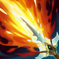

Asesina
Dificultad Alta
HABILIDADES


PASIVA • MARCA DE LA ASESINA
Infligir daño a un campeón con tus hechizos crea un círculo de energía a su alrededor. Salir del círculo hará que el siguiente ataque básico de Akali esté potenciado con alcance y daño adicionales.
1 • RÁFAGA DE LOS CINCO FILOS
Akali arroja cinco kunai que infligen daño según su daño de ataque y poder de habilidad adicionales y ralentizan al alcance máximo.
2 • MANTO CREPUSCULAR
Akali desata una cortina de humo, obtiene velocidad de movimiento por un momento y restaura energía. Al estar dentro del manto, Akali se vuelve invisible. Quedará revelada por un instante si ataca o usa habilidades.
3 • MANIOBRA DE SHURIKEN
Akali realiza una voltereta hacia atrás y arroja un shuriken hacia adelante que inflige daño mágico. El primer enemigo o nube de humo impactados quedan marcados. Vuelve a lanzarlo para desplazarte hacia el objetivo marcado e infligir daño adicional.
DEFINITIVA • EJECUCIÓN PERFECTA
Akali salta hacia una dirección para infligir daño a los enemigos alcanzados. Al volver a lanzar, se desplaza en una dirección y ejecuta a todos los enemigos alcanzados.
CONFIGURACIÓN
OBJETOS
-

Maldición del Liche
2950+80 Poder de Habilidad
+10 Aceleración de Habilidad
MALDICIÓN: +5% de Velocidad de Movimiento.
ESPADA ENCANTADA: Usar una habilidad causa que el siguiente ataque dentro de 10 seg inflija daño mágico adicional igual al 75% AD básico (+50% AP). (1.5 seg de Enfriamiento).
El daño se reduce contra estructuras. -

Sombrero Mortífero de Rabadon
3500+120 Poder de Habilidad
DAÑO EXCESIVO: Aumenta el Poder de Habilidad en un 40%.
-

Báculo del Vacío
2800+70 Poder de Habilidad
DISOLVER: +40% de Penetración de Magia.
-

Morellonomicón
3000+300 Vida Máxima
+70 Poder de Habilidad
PREDICADOR DEL FIN: +15 de Penetración de Magia.
AFLICCIÓN: Infligir daño mágico aplica un 40% de Heridas Graves a campeones enemigos por 3 seg. Si el objetivo está por debajo del 50% de Vida, este efecto aumenta a un 60% de Heridas Graves.
Heridas Graves reduce la efectividad de las curaciones y efectos regenerativos. -

El Tormento de Liandry
3150+250 Vida Máxima
+70 Poder de Habilidad
LOCURA: Inflige un 1.2% de daño adicional por cada segundo en combate contra campeones, con un límite del 6% tras 5 seg.
TORMENTO: Las habilidades de daño y los ataques potenciados infligen un 1% de la Vida Máxima del enemigo como daño mágico adicional a lo largo de 3 seg. Este daño se duplica si están ralentizados o inmovilizados. -

Botas de Mercurio
1000CALZADO: +40 de Velocidad de Movimiento.
MEJORADO: +10 de Resistencia Mágica.
TENACIDAD: Reduce la duración de aturdimientos, ralentizaciones, provocaciones, miedo, silencio, ceguera e inmovilizaciones un 35%.
CARRERA (ACTIVA): Aumenta la Velocidad de Movimiento un 15% durante 3 seg. Infligir o recibir daño de campeones desactiva los efectos de Carrera. (60 seg de enfriamiento). -

Encantamiento de Estasis
800ESTASIS (ACTIVA): Te vuelves invulnerable e inalcanzable durante 2.5 seg, pero no puedes moverte, atacar, lanzar habilidades ni utilizar objetos. (120 seg de enfriamiento).
RUNAS Y HECHIZOS
-

Conquistador
Obtienes acumulaciones de fuerza adaptable al atacar a un campeón con habilidades o ataques separados. Se acumula hasta 5 veces. Al alcanzar el máximo de acumulaciones, inflige daño adaptable adicional a campeones.
POR ACUMULACIÓN: 2 - 6 de Daño de Ataque adicional o 3 - 9 de Poder de Habilidad durante 6 seg.
EFECTO ADICIONAL CON EL MÁXIMO DE ACUMULACIONES: Cuerpo a cuerpo: 10% | A distancia: 7% de daño adaptable adicional a campeones. -

Brutalidad
Obtienes 7 de Daño de Ataque y un 2% de Penetración de Armadura o 14 de Poder de Habilidad y un 2% de Penetración de Magia (adaptable).
-

Segundo Aire
Gana 5 de Vida cada 5 seg.
Después de recibir daño de un campeón enemigo, regenera 3(+1.5% de tu Vida faltante) a lo largo de los próximos 10 seg. Este efecto se duplica para campeones cuerpo a cuerpo. -

Dulces Frutos
Aumenta la curación de Frutamiel en un 25%. Cada vez que tú o un aliado cercano coma una Frutamiel, obtienes 20 de oro.
-

Ignición
ENFRIAMIENTO: 90 seg.
Prende fuego al campeón enemigo objetivo, lo que inflige 60 de daño verdadero (60-410 basado en nivel) durante 5 seg y le aplica un 60% de Heridas Graves mientras dure el efecto. -

Destello
ENFRIAMIENTO: 150 seg.
Te teletransportas una distancia corta hacia delante o hacia la dirección objetivo.
CÓMO JUGAR AKALI
Akali es una asesina de daño mágico de carril medio. En esta guía, echaremos un vistazo a Akali en el carril superior. Akali es una campeona débil y puede luchar contra campeones a distancia antes de alcanzar el nivel 5. Una vez que llega al nivel 5, tienes acceso a la Ejecución Perfecta (Definitiva), que es su principal fuente de daño, aquí es cuando puedes comenzar a utilizar su agresividad. estilo de juego e intente obtener una ventaja temprana, ya sea tratando de matar en solitario en el carril superior o agrupe temprano con su equipo alrededor de los objetivos y concéntrese en los objetivos blandos en la línea de fondo.
Akali también se puede jugar en el carril superior. La construcción con el carril superior de Akali es la misma que la del carril central, no hay mucho más que sea diferente en términos de estilos de juego, construcción, etc. Lo único a tener en cuenta son los enfrentamientos. Hay muchos campeones de la línea superior que son realmente buenos duelistas que pueden castigarte más al principio del juego, así que tenlo en cuenta.